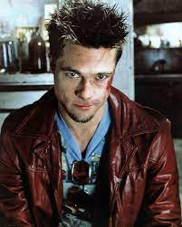

Tyler Durden

Tyler Durden, Chuck Palahniuk'un "Fight Club" adlı romanında ve David Fincher tarafından yönetilen aynı adlı filmdeki baş karakterdir. Film, modern erkeklik, tüketim toplumu ve isyan gibi temaları ele alır.

Tyler, anarşist bir felsefeye sahip olan ve anti-kapitalist bir hareket olan "Dövüş Kulübü"nü başlatan gizemli ve karizmatik bir figürdür. Dövüş Kulübü, güçlü bir alt kültür haline gelir ve Tyler'ın liderliği altında çöküşe doğru ilerler.